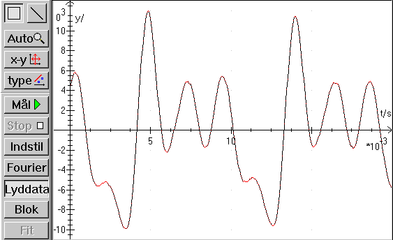
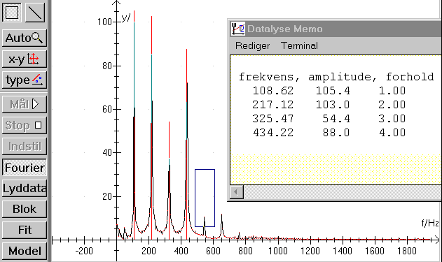

Har man et 16 bits lydkort og en mikrofon, kan man vælge apparat lydkort og måle lyd. Der kræves intet ekstra udstyr og målingerne kan foretages hjemme!
På billedet ses en måling af et ooohh. Det er tydeligt, at signalet består af lyd med flere frekvenser, hvilke finder man ud af ved at klikke på knappen »Fourier«, så fås et frekvensspektrum som vist nedenfor.

Marker en top af gangen med musen. (start fra venstre med grundtonen) og klik på knappen »Fit«, så beregnes frekvens og amplitude og resultaterne skrives i memoen.
Der kan laves mange forsøg med lyd, se øvelsesvejledninger.
Lydkortet kan også benyttes til afspilning af lyd, og lydkortet kan lave et sweep og samtidigt kan der måles lyd. Dette kan benyttes til resonansforsøg fx i et paprør.